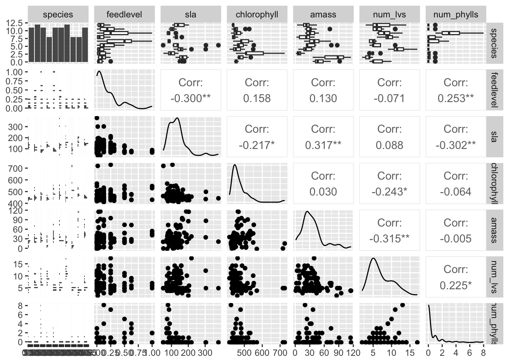
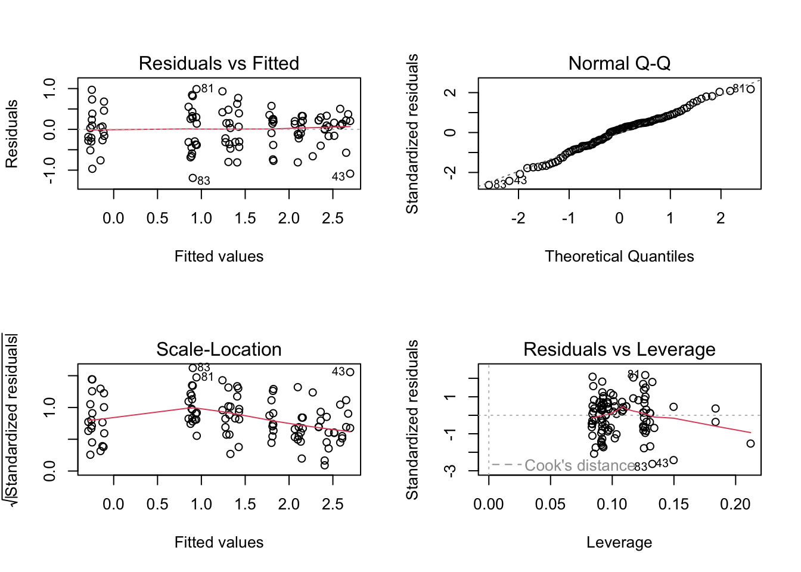

Code
#visualize missing observations
gg_miss_var(plant_clean) +
labs(title = "Missing Values in the Dataset") + #label title
theme_bw() #set themeSarracenia is a genus of carnivorous plants commonly known as pitcher plants, are carnivorous plants renowned for their unique morphology and ecological role. Like any plant, they contribute to the biodiversity and contribute to keeping ecosystems at equilibrium. Predicting the biomass of Sarracenia plants can provide valuable insights for optimizing cultivation practices, conservation efforts, and understanding nutrient cycling in wetland environments (Ellison 2001).
This analysis aims to explore the relationship between several predictors and the total biomass of Sarracenia plants. The examined predictors include the amount of feed, species type, surface area of the youngest leaf, the number of pitchers, the number of phyllodes, and the chlorophyll content. Understanding the factors that contribute to biomass can aid in predicting plant growth and productivity, which is vital for horticulturists and conservationists to optimize resource allocation and make informed decisions regarding cultivation practices. This is especially important for species like the Rubra which is federally endangered (Jo 1998). However, it is important to recognize that this analysis will not look at all possible variables that influence biomass. There have been studies showing that plants can be limited by nitrogen and environmental stress (Bott 2008).
I am testing the hypothesis that the aforementioned potential variables will create a model that significantly predicts the total biomass of a given plant, and am ultimately trying to answer the questions: Can I accurately predict the total biomass of a sarracenia plant? Which variables will be the most significant predictors?
“Two plants of each Sarracenia species were assigned to one of six feeding levels in a regression design ranging from 0 - 0.25g of finely ground wasps per feeding (for small species), 0 - 0.5g (for species of intermediate sizes), and 0 - 1.0g (for large species); N equals120 plants total. Aboveground size and Amass were measured prior to commencing treatments. Plants were fed once/week for 7 weeks.” (Ellison).
The data is organized into columns that are characteristics, with each row being a an individual plant with its corresponding observations. There are 120 records and 32 variables in CSV format. 11 of the columns were calculated, while the other 21 were measurements.
#visualize missing observations
gg_miss_var(plant_clean) +
labs(title = "Missing Values in the Dataset") + #label title
theme_bw() #set themeIf chlorophyll content is missing, the amass column likely cannot be calculated. This could be the reason that each of those columns have the same number of missing N/A. Although it could also be that those specific plants did not meet the requirements to take the measurement in other categories as well within the full data set.
#drop NAs
plant_sub <- plant_clean |> #subset clean data
drop_na(sla, chlorophyll, num_phylls, amass, num_lvs) #drop na values#calculate phearsons
plant_corr <- plant_sub |>
select(3:8) |> #select numeric predictor variables
cor(method = "pearson") #set method
#visualize pearsons correlation
corrplot(plant_corr, method = "ellipse", addCoef.col = "black")
In this situation, I believe that it is safe to assume there is no colinearity between the variables. Although I will continue to monitor how the higher correlated variables affect different models as I run the regressions.
#create visualization of relationships
plant_sub |>
select(2:8) |> #select predictors
ggpairs() #build scatter plot matrix
Based on the results from figure 3, there do not appear to be any strong relationships between the possible predictor variables. There would be a clear positive or negative trend with points forming a line if there was strong correlation.
#create null model
null <- lm(totmass ~ 1, data = plant_sub)
#create full model
full <- lm(totmass ~ species + feedlevel + sla + chlorophyll +
amass + num_lvs + num_phylls, data = plant_sub)The null model in this and all cases is the response variable against a one slope line. For our full model we will be looking at all the possible predictor variables combined into one model. This may seem like the best model now; however, it is also the most complex.
#full model diagnostics
par(mfrow = c(2,2))
plot(full)
#check normality
check_normality(full)Warning: Non-normality of residuals detected (p < .001).#check variability
check_heteroscedasticity(full)Warning: Heteroscedasticity (non-constant error variance) detected (p < .001).Created standard plots for checking assumptions as well as using Shapiro-Wilks and Breusch-Pagen tests. After visually and statistically checking the assumptions, the full model did not meet all assumptions.
#perform log transformation
null_log <- lm(log(totmass) ~ 1, data = plant_sub)
full_log <- lm(log(totmass) ~ species + feedlevel + sla + chlorophyll +
amass + num_lvs + num_phylls, data = plant_sub)
#check assumptions of transformed full model
par(mfrow = c(2,2))
plot(full_log)
check_normality(full_log)OK: residuals appear as normally distributed (p = 0.107).check_heteroscedasticity(full_log)OK: Error variance appears to be homoscedastic (p = 0.071).After performing the log transformation, I generated the standard plots to visually check assumptions for the new transformed model. Then I ran the same statistical tests used on the transformed model, which this new version passed.
#run VIF
car::vif(full_log) GVIF Df GVIF^(1/(2*Df))
species 42.351675 9 1.231351
feedlevel 1.621993 1 1.273575
sla 1.999989 1 1.414210
chlorophyll 1.949828 1 1.396362
amass 2.872084 1 1.694722
num_lvs 2.813855 1 1.677455
num_phylls 2.995510 1 1.730754Using generalized variance inflation factor, I determined that none of the variables displayed concern for collinearity.
#creating model 2
model2_log <- lm(log(totmass) ~ species + sla, data = plant_sub)
#check assumptions for model 2
par(mfrow = c(2,2))
plot(model2_log)check_normality(model2_log)OK: residuals appear as normally distributed (p = 0.128).check_heteroscedasticity(model2_log)OK: Error variance appears to be homoscedastic (p = 0.074).For the second model I chose to look at species and specific area of the youngest leaf of the plant. I think that leaf size may be species specific and that the leaf size for the youngest leaf will be a good indicator of overall mass. All assumptions were passed.
#creating model 3
model3_log <- lm(log(totmass) ~ num_lvs + feedlevel + amass, data = plant_sub)
#check assumptions for model 3
par(mfrow = c(2,2))
plot(model3_log)check_normality(model3_log)OK: residuals appear as normally distributed (p = 0.060).check_heteroscedasticity(model3_log)OK: Error variance appears to be homoscedastic (p = 0.125).For the third model I decided to look at the grams of ground hymenoptera given to each plant, the number of phyllodes/pitchers produced by each plant, and the mass-based light-saturated photosynthetic rate of youngest leaf. I chose these because they are the more specific measurement observations. All assumptions were passed.
#creating model 4
model4_log <- lm(log(totmass) ~ species + feedlevel, data = plant_sub)
#check assumptions for model 4
par(mfrow = c(2,2))
plot(model4_log)
check_normality(model4_log)OK: residuals appear as normally distributed (p = 0.339).check_heteroscedasticity(model4_log)OK: Error variance appears to be homoscedastic (p = 0.110).For the fourth and final model, I looked at just species and the grams of ground hymenoptera given to each plant. This is to test if the simplest predictors will work well. All assumptions were passed.
#compare models using AIC
MuMIn::AICc(full_log, model2_log, model3_log, model4_log, null_log) df AICc
full_log 17 133.9424
model2_log 12 154.0564
model3_log 5 297.2645
model4_log 12 159.6218
null_log 2 306.0028I found that the full model that used sla, feedlevel, species, chlorophyll, amass, num_lvs, and num_phylls predictors best predicted total mass (model summary).
#show best model
summary(full_log)
Call:
lm(formula = log(totmass) ~ species + feedlevel + sla + chlorophyll +
amass + num_lvs + num_phylls, data = plant_sub)
Residuals:
Min 1Q Median 3Q Max
-0.88872 -0.20811 0.02825 0.24218 0.78287
Coefficients:
Estimate Std. Error t value Pr(>|t|)
(Intercept) -1.339043 0.597727 -2.240 0.027624 *
speciesalata 1.113163 0.184021 6.049 3.56e-08 ***
speciesflava 1.404562 0.262955 5.341 7.29e-07 ***
speciesjonesii 0.319652 0.196426 1.627 0.107281
speciesleucophylla 1.709035 0.227608 7.509 4.88e-11 ***
speciesminor 0.389310 0.187903 2.072 0.041239 *
speciespsittacina -1.645198 0.207035 -7.946 6.36e-12 ***
speciespurpurea -0.364348 0.254380 -1.432 0.155643
speciesrosea -0.947383 0.260495 -3.637 0.000467 ***
speciesrubra 0.875342 0.196361 4.458 2.46e-05 ***
feedlevel -0.474255 0.234493 -2.022 0.046199 *
sla -0.002493 0.001160 -2.149 0.034430 *
chlorophyll 0.004368 0.001189 3.672 0.000414 ***
amass 0.002338 0.002988 0.782 0.436166
num_lvs 0.091764 0.022413 4.094 9.46e-05 ***
num_phylls -0.039585 0.051714 -0.765 0.446068
---
Signif. codes: 0 '***' 0.001 '**' 0.01 '*' 0.05 '.' 0.1 ' ' 1
Residual standard error: 0.413 on 87 degrees of freedom
Multiple R-squared: 0.8687, Adjusted R-squared: 0.8461
F-statistic: 38.38 on 15 and 87 DF, p-value: < 2.2e-16#make table
table <- tidy(full_log, conf.int = TRUE) |> #create table
mutate_if(is.numeric, round, 3) |> #change length of values
flextable() |> #create flex table
autofit() #auto format table
tableterm | estimate | std.error | statistic | p.value | conf.low | conf.high |
|---|---|---|---|---|---|---|
(Intercept) | -1.339 | 0.598 | -2.240 | 0.028 | -2.527 | -0.151 |
speciesalata | 1.113 | 0.184 | 6.049 | 0.000 | 0.747 | 1.479 |
speciesflava | 1.405 | 0.263 | 5.341 | 0.000 | 0.882 | 1.927 |
speciesjonesii | 0.320 | 0.196 | 1.627 | 0.107 | -0.071 | 0.710 |
speciesleucophylla | 1.709 | 0.228 | 7.509 | 0.000 | 1.257 | 2.161 |
speciesminor | 0.389 | 0.188 | 2.072 | 0.041 | 0.016 | 0.763 |
speciespsittacina | -1.645 | 0.207 | -7.946 | 0.000 | -2.057 | -1.234 |
speciespurpurea | -0.364 | 0.254 | -1.432 | 0.156 | -0.870 | 0.141 |
speciesrosea | -0.947 | 0.260 | -3.637 | 0.000 | -1.465 | -0.430 |
speciesrubra | 0.875 | 0.196 | 4.458 | 0.000 | 0.485 | 1.266 |
feedlevel | -0.474 | 0.234 | -2.022 | 0.046 | -0.940 | -0.008 |
sla | -0.002 | 0.001 | -2.149 | 0.034 | -0.005 | 0.000 |
chlorophyll | 0.004 | 0.001 | 3.672 | 0.000 | 0.002 | 0.007 |
amass | 0.002 | 0.003 | 0.782 | 0.436 | -0.004 | 0.008 |
num_lvs | 0.092 | 0.022 | 4.094 | 0.000 | 0.047 | 0.136 |
num_phylls | -0.040 | 0.052 | -0.765 | 0.446 | -0.142 | 0.063 |
This model used a total of seven predictors: mass-based light-saturated photosynthetic rate of the youngest leaf, specific leaf area of the youngest fully-expanded leaf, total number of pitchers and phyllodes produced, chlorophyll a + b content of youngest fully-expanded leaf, and the grams of ground hymenoptera fed per week to each plant. It has 87 degrees of freedom, a test statistic of 38.38, and a p-value less than 2e-16. Using all of these factors, this model is able to account for 84.6% of the variance in the total mass.
#make prediction model
model_pred <- ggpredict(full_log, terms = "species", back.transform = TRUE)
#plot prediction model
plot(model_pred, add.data = TRUE)Our model showed that certain species of sarracenia are better predictors than others, specifically alata, flava, leucophylla, psittacina, rosea, and rubra. The number of pitchers/phyllodes and chlorophyll were the other two predictors that were most significant in the model. Predicting total mass of a sarracenia plant requires many different variables to create an accurate prediction similar to the full model.
Bott, Terry, et al. "Nutrient Limitation and Morphological Plasticity of the Carnivorous Pitcher Plant Sarracenia Purpurea in Contrasting Wetland Environments." New Phytologist, vol. 180, no. 3, 2008, pp. 631–641, https://doi.org/10.1111/j.1469-8137.2008.02575.x.
Ellison, A. and E. Farnsworth. 2021. Effects of Prey Availability on Sarracenia Physiology at Harvard Forest 2005 ver 18. Environmental Data Initiative. https://doi.org/10.6073/pasta/26b22d09279e62fd729ffc35f9ef0174 (Accessed 2023-06-01).
Ellison, Aaron M., and Nicholas J. Gotelli. "Evolutionary Ecology of Carnivorous Plants." Trends in Ecology & Evolution, vol. 16, no. 11, 2001, pp. 623–629, https://doi.org/10.1016/s0169-5347(01)02269-8.
Jo, Mary, et al. "Allozyme Diversity in the Endangered Pitcher Plant Sarracenia Rubra Ssp.. Alabamensis(Sarraceniaceae) and Its Close Relative S. Rubra Ssp.. Rubra." American Journal of Botany, vol. 85, no. 6, 1998, pp. 802–810, https://doi.org/10.2307/2446415.